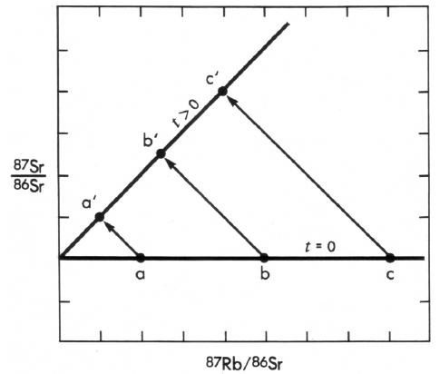
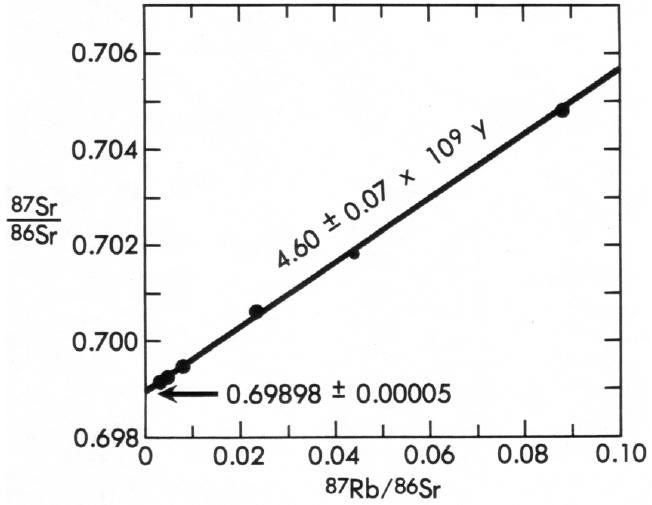
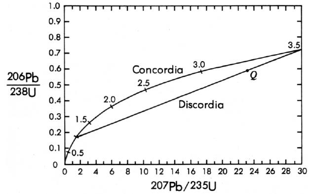
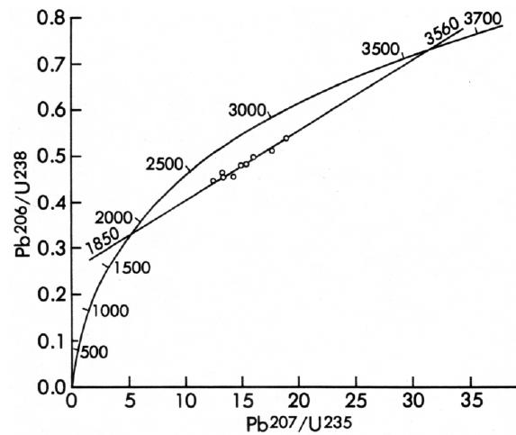
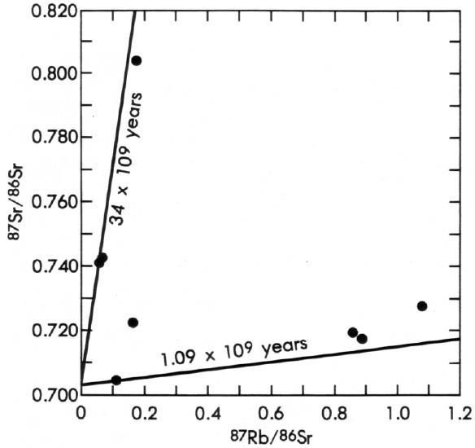
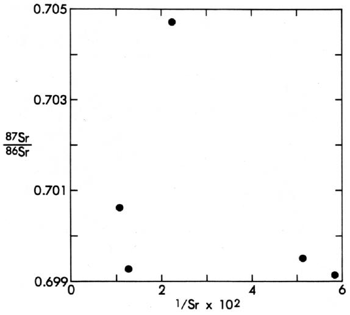
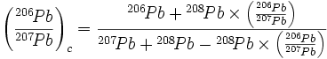
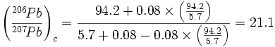

DATAÇÃO RADIOMÉTRICA
A questão das idades da Terra, de suas formações rochosas e de suas características tem fascinado filósofos, teólogos e cientistas por séculos, principalmente porque as respostas colocam nossas vidas em perspectiva temporal. Até o século XVIII, esta questão estava principalmente nas mãos de teólogos, que baseavam seus cálculos na cronologia bíblica. O bispo James Ussher, um clérigo irlandês do século XVII, por exemplo, calculou que a criação ocorreu em 4004 a.C. Houve muitas outras estimativas semelhantes, mas elas resultavam invariavelmente em uma Terra com apenas alguns milhares de anos de idade.
No final do século XVIII, alguns naturalistas começaram a examinar atentamente as rochas antigas da Terra. Eles observaram que cada formação rochosa, por mais antiga que fosse, parecia ter sido formada a partir de rochas ainda mais antigas. Comparando essas rochas com os produtos da erosão, sedimentação e movimentos terrestres atuais, os primeiros geólogos concluíram rapidamente que o tempo necessário para formar e esculpir a Terra atual era incomensuravelmente maior do que se pensava anteriormente. James Hutton, um médico-agricultor e um dos fundadores da ciência da geologia, escreveu em 1788: "Portanto, o resultado da nossa presente investigação é que não encontramos nenhum vestígio de um começo, — nem perspectiva de um fim." Embora isso possa agora soar como uma exageração, expressa perfeitamente o enorme salto intelectual necessário quando o tempo geológico foi finalmente e para sempre separado dos limites artificiais impostos pela duração da vida humana.
Na metade ao final do século XIX, geólogos, físicos e químicos buscavam maneiras de quantificar a idade da Terra. Lord Kelvin e Clarence King calcularam o tempo necessário para que a Terra esfriasse de um estado líquido branco-ardente; eles acabaram por chegar a 24 milhões de anos. James Joly calculou que a idade da Terra era de 89 milhões de anos com base no tempo necessário para que o sal se acumulasse nos oceanos. Houve outras estimativas, mas os cálculos foram veementemente contestados porque todos eram claramente comprometidos por incertezas tanto nas suposições iniciais quanto nos dados.
Contudo, sem que os cientistas envolvidos nesta controvérsia soubessem, a geologia estava prestes a ser profundamente afetada pelas mesmas descobertas que revolucionaram a física no início do século 20. A descoberta da radioatividade em 1896 por Henri Becquerel, o isolamento do rádio por Marie Curie pouco depois, a descoberta das leis de decaimento radioativo em 1902 por Ernest Rutherford e Frederick Soddy, a descoberta dos isótopos em 1910 por Soddy e o desenvolvimento do espectrógrafo de massa quantitativo em 1914 por J. J. Thomson formaram a base dos métodos modernos de datação isotópica. Mas não foi até ao final dos anos 1950 que todas as peças estavam no lugar; nessa altura, o fenómeno da radioatividade era compreendido, a maioria dos isótopos naturalmente existentes tinha sido identificada e a sua abundância determinada, a instrumentação com a sensibilidade necessária tinha sido desenvolvida, os traçadores isotópicos estavam disponíveis nas quantidades e pureza requeridas, e as vidas médias dos isótopos radioativos de longa duração eram razoavelmente bem conhecidas. No início dos anos 1960, a maioria das principais técnicas de datação radiométrica atualmente em uso tinha sido testada e as suas limitações gerais eram conhecidas.
Nenhuma técnica, é claro, é jamais completamente aperfeiçoada e o refinamento continua até os dias de hoje, mas há mais de duas décadas que os métodos de datação radiométrica têm sido utilizados para medir de forma confiável as idades das rochas, da Terra, dos meteoritos e, desde 1969, da Lua.
A datação radiométrica baseia-se no decaimento de isótopos radioativos de vida longa que ocorrem naturalmente em rochas e minerais. Estes isótopos pais decaem em isótopos filhais estáveis a taxas que podem ser medidas experimentalmente e são efetivamente constantes ao longo do tempo, independentemente das condições físicas ou químicas. Existem vários isótopos radioativos de vida longa utilizados na datação radiométrica, e uma variedade de maneiras como são empregados para determinar as idades de rochas, minerais e materiais orgânicos. Alguns dos isótopos pais, filhais finais e tempos de meia-vida envolvidos estão listados na Tabela 1. Por vezes, estes esquemas de decaimento são usados individualmente para determinar uma idade (por exemplo, Rb-Sr) e por vezes em combinações (por exemplo, U-Th-Pb). Cada um dos vários esquemas de decaimento e métodos de datação possui características únicas que o tornam aplicável a situações geológicas particulares. Por exemplo, um método baseado num isótopo pais com uma meia-vida muito longa, como o 147Sm, não é muito útil para medir a idade de uma rocha com apenas alguns milhões de anos, porque quantidades insuficientes do isótopo filhal se acumulam neste curto período. Da mesma forma, o método do 14C só pode ser usado para determinar as idades de certos tipos de material orgânico jovem e é inútil em granitos antigos. Alguns métodos funcionam apenas em sistemas fechados, enquanto outros funcionam em sistemas abertos.1 O ponto é que nem todos os métodos são aplicáveis a todas as rochas de todas as idades. Uma das funções primárias do especialista em datação (por vezes chamado de geocronologista) é selecionar o método aplicável para o problema particular a ser resolvido e projetar o experimento de tal forma que haja verificações sobre a confiabilidade dos resultados. Alguns dos métodos possuem verificações internas, de modo que os próprios dados fornecem boa evidência de confiabilidade ou falta dela. Comumente, uma idade radiométrica é verificada por outras evidências, como a ordem relativa das unidades rochosas observada no campo, medições de idade baseadas em outros esquemas de decaimento ou idades de várias amostras da mesma unidade rochosa. O ponto principal é que as idades das formações rochosas raramente são baseadas numa única medição de idade isolada. Pelo contrário, as idades radiométricas são verificadas sempre que possível e prático, e são avaliadas considerando outros dados relevantes.
| Isótopo parental |
Produto final (filhote) isótopo |
Meia-vida (anos) |
|---|---|---|
| potássio-40 (40K) | argônio-40 (40Ar) | 1,25 × 109 |
| rubídio-87 (87Rb) | estroncio-87 (87Sr) | 4,88 × 1010 |
| carbono-14 (14C) | nitrogênio-14 (14N) | 5,73 × 103 |
| urânio-235 (235O) | chumbo-207 (207Pb) | 7,04 × 108 |
| urânio-238 (238O) | chumbo-206 (206Pb) | 4,47 × 109 |
| tório-232 (232Th) | chumbo-208 (208Pb) | 1,40 × 1010 |
| lutécio-176 (176Lu) | hafnício-176 (176Hf) | 3,5 × 1010 |
| renígio-187 (187Re) | osmínio-187 (187Os) | 4,3 × 1010 |
| samário-147 (147Sm) | neodímio-143 (143Nd) | 1,06 × 1011 |
O meu propósito aqui não é revisar e discutir todos os métodos de datação em uso. Em vez disso, descrevo brevemente apenas os três métodos principais. Estes são os métodos K-Ar, Rb-Sr e U-Pb. Estes são os três métodos mais comumente utilizados pelos cientistas para determinar as idades das rochas porque possuem a mais ampla gama de aplicabilidade e são altamente confiáveis quando utilizados corretamente. Estes também são os métodos mais comumente criticados por cientistas criacionistas. Para informações adicionais sobre estes métodos ou sobre métodos não cobertos aqui, o leitor é remetido aos livros de Faul (47), Dalrymple e Lanphere (35), Doe (38), York e Farquhar (136), Faure e Powell (50), Faure (49) e Jager e Hunziker (70), bem como ao artigo de Dalrymple (32).
MÉTODO K-Ar
O método K-Ar é provavelmente a técnica de datação radiométrica mais amplamente utilizada disponível para geólogos. Baseia-se na radioatividade do 40K, que sofre decaimento duplo por captura eletrônica para 40Ar e por emissão beta para 40Ca. A razão entre os átomos de 40K que decaem para 40Ar e aqueles que decaem para 40Ca é 0,117, o que é chamado de razão de ramificação. Como o 40Ca é praticamente ubíquo em rochas e minerais e é relativamente abundante, geralmente não é possível corrigir o 40Ca inicialmente presente e, portanto, o método 40K/40Ca raramente é utilizado para datação. O 40Ar, no entanto, é um gás inerte que escapa facilmente das rochas quando estas são aquecidas, mas fica retido nas estruturas cristalinas de muitos minerais após uma rocha esfriar. Assim, em princípio, enquanto uma rocha está derretida, o 40Ar formado pelo decaimento do 40K escapa do líquido. Após a rocha ter solidificado e esfriado, o 40Ar radiogênico fica retido nos cristais sólidos e acumula-se com o passar do tempo. Se a rocha for aquecida ou derretida em algum momento posterior, então parte ou todo o 40Ar pode ser liberado e o relógio parcialmente ou totalmente reiniciado.
No processo de análise, deve ser feita uma correção para o argônio atmosférico2 presente na maioria dos minerais e no equipamento de vácuo utilizado para as análises. Esta correção é facilmente realizada medindo a quantidade de 36Ar presente e, utilizando a composição isotópica conhecida do argônio atmosférico (40Ar/ 36Ar = 295,5), subtraindo a quantidade apropriada de 40Ar devido à contaminação atmosférica. O que resta é a quantidade de 40Ar radiogênico. Esta correção pode ser feita com grande precisão e não tem efeito apreciável na idade calculada, a menos que o argônio atmosférico seja uma proporção muito grande do argônio total na análise. O geocronologista leva este fator em consideração ao atribuir erros experimentais às idades calculadas.
O método K-Ar tem dois requisitos principais. Primeiro, não pode haver argônio, além do de composição atmosférica, retido na rocha ou no mineral quando este se forma. Segundo, a rocha ou o mineral não pode perder ou ganhar potássio ou argônio desde o momento da sua formação até o momento da análise. Por meio de muitos experimentos nas últimas três décadas, os geólogos aprenderam quais tipos de rochas e minerais atendem a esses requisitos e quais não atendem. O relógio K-Ar funciona principalmente em rochas ígneas, ou seja, aquelas que se formam a partir de um líquido rochoso (como lava e granito) e têm histórias pós-formação simples. Não funciona bem em rochas sedimentares porque essas rochas são compostas por detritos de rochas mais antigas. Não funciona bem na maioria das rochas metamórficas porque este tipo de rocha geralmente tem uma história complexa, envolvendo frequentemente um ou mais aquecimentos após a formação inicial. O método funciona em certos minerais que retêm bem o argônio, como a muscovita, a biotita e o feldspato vulcânico, mas não em outros minerais, como o feldspato de rochas graníticas, porque estes perdem seu argônio mesmo a baixas temperaturas. O método funciona bem em fluxos de lava subaérea, mas não na maioria dos basaltos de almofada submarinos porque estes comumente aprisionam excesso de 40Ar quando se solidificam. Uma das principais tarefas do geocronologista é selecionar o tipo de material usado para uma análise de datação. Um grande esforço é dedicado à seleção da amostra, e as escolhas são feitas antes da análise, não com base nos resultados. Erros ocorrem, mas são geralmente detectados pelos diversos controles empregados no bem projetado experimento.
MÉTODO Rb-Sr
O método Rb-Sr baseia-se na radioatividade do 87Rb, que sofre decaimento beta simples para 87Sr com uma meia-vida de 48,8 bilhões de anos. O rubídio é um constituinte importante de muito poucos minerais, mas a química do rubídio é semelhante à do potássio e do sódio, ambos os quais formam muitos minerais comuns, e, portanto, o rubídio ocorre como elemento traço na maioria das rochas. Devido à meia-vida muito longa do 87Rb, a datação Rb-Sr é usada principalmente em rochas mais antigas que cerca de 50 a 100 milhões de anos. Este método é muito útil em rochas com histórias complexas porque o produto filial, o estrôncio, não escapa dos minerais tão facilmente quanto o argônio. Como resultado, uma amostra pode obedecer aos requisitos de sistema fechado para datação Rb-Sr em uma faixa mais ampla de condições geológicas do que uma amostra para datação K-Ar.
Diferentemente do argônio, que escapa facilmente e completamente da maioria das rochas fundidas, o estrôncio está presente como um elemento traço na maioria dos minerais quando eles se formam. Por essa razão, idades simples Rb-Sr podem ser calculadas apenas para aqueles minerais que são ricos em rubídio e contêm uma quantidade negligenciável de estrôncio inicial. Em tais minerais, a idade calculada é insensível à quantidade e composição do estrôncio inicial. Para a maioria das rochas, no entanto, o estrôncio inicial está presente em quantidades significativas, de modo que a datação é feita pelo método de isócrona, que elimina completamente o problema do estrôncio inicial.
Outros Links:
|
No método de isócrono Rb-Sr, vários (três ou mais) minerais da mesma rocha, ou várias rochas cogenéticas com diferentes teores de rubídio e estrôncio, são analisados e os dados são plotados em um diagrama de isócrono (Figura 2). Os teores de 87Rb e 87Sr são normalizados em relação à quantidade de 86Sr, que não é um produto filhante radiogênico. Quando uma rocha é formada pela primeira vez, digamos, a partir de um magma, as razões 87Sr/86Sr em todos os minerais serão as mesmas, independentemente dos teores de rubídio ou estrôncio dos minerais, de modo que todas as amostras se plotarão em uma linha horizontal (a-b-c em Figura 2). A intersecção desta linha com o eixo das ordenadas representa a composição isotópica do estrôncio inicial. A partir desse momento, à medida que cada átomo de 87Rb decai para 87Sr, os pontos seguirão os caminhos3 mostrados pelas setas. Em qualquer momento após a formação, os pontos estarão alinhados ao longo de alguma linha a'-b'-c' (Figura 2), cuja inclinação será uma função da idade da rocha. A intersecção da linha no eixo das ordenadas fornece a composição isotópica do estrôncio inicial presente quando a rocha se formou. Observe que as intersecções das linhas a-b-c e a'-b'-c' são idênticas, de modo que a composição isotópica inicial do estrôncio pode ser determinada a partir desta intersecção, independentemente da idade da rocha.
|
 |
Observe que o método de isócrono Rb-Sr não requer nenhum conhecimento ou suposições sobre a composição isotópica ou a quantidade do isótopo filhote inicial — na verdade, estes são aprendidos pelo método. As rochas ou minerais devem ter permanecido como sistemas fechados ao rubídio e estrôncio desde sua formação; se essa condição não for verdadeira, então os dados não se plotarão em uma isócrona. Além disso, se a composição isotópica inicial do estrôncio não for uniforme ou se as amostras analisadas não forem cogenéticas, os dados não cairão em uma linha reta. Como o leitor pode facilmente ver, o método de isócrono Rb-Sr é elegantemente auto-verificável. Se os requisitos do método foram violados, os dados claramente o mostram.
Um exemplo de isócrono Rb-Sr é mostrado na Figura 3, que inclui análises de cinco fases separadas do meteorito Juvinas (3). Os dados formam uma isócrona indicando uma idade para o Juvinas de 4,60 ± 0,07 bilhões de anos. Este meteorito também foi datado pelo método de isócrono Sm-Nd, que funciona como o método de isócrono Rb-Sr, em 4,56 ± 0,08 bilhões de anos (84).
|
 |
MÉTODO U-Pb
O método U-Pb depende dos decaimentos do 235U e do 238U. Estes dois isótopos pais sofrem uma série de decaimentos envolvendo vários isótopos filhas radioativos intermediários antes de se alcançar o produto filha estável, chumbo (Tabela 1).
Podem ser feitas duas simples e independentes "idades" a partir das duas decais U-Pb: 238U para 206Pb, e 235U para 207Pb. Além disso, uma "idade" baseada na razão 207Pb/206Pb pode ser calculada porque esta razão muda com o tempo. Se necessário, pode ser feita uma correção para o chumbo inicial nestes sistemas usando 204Pb como índice. Se estas três cálculos de idade concordarem, então a idade representa a verdadeira idade da rocha. O chumbo, no entanto, é um elemento volátil, e assim a perda de chumbo é comumente um problema. Como resultado, as idades simples U-Pb são frequentemente discordantes.
O método concordia-discordia U-Pb contorna o problema da perda de chumbo em sistemas discordantes e fornece uma verificação interna da confiabilidade. Este método envolve os decaimentos do 238U e do 235U e é utilizado em minerais como o zircão, um mineral acessório comum em rochas ígneas, que contém urânio, mas nenhum ou um teor inicial de chumbo negligenciável. Este último requisito pode ser verificado, se necessário, verificando a presença de 204Pb, o que indicaria a presença e a quantidade de chumbo inicial. Em um sistema fechado livre de chumbo, um ponto representando as razões 206Pb/238U e 207Pb/235U plotará em uma linha curva conhecida como concordia (Figura 4). A localização do ponto na concordia depende apenas da idade da amostra. Se, em uma data posterior (digamos, 2,5 bilhões de anos após a formação), a amostra perder chumbo em um evento episódico, o ponto se moverá fora da concordia ao longo de uma linha reta em direção à origem. A qualquer momento após a perda episódica de chumbo (digamos, 1,0 bilhão de anos depois), o ponto Q na Figura 4 estará em uma corda da concordia que conecta a idade original da amostra e a idade do episódio de perda de chumbo. Esta corda é chamada de discordia. Se agora considerarmos o que aconteceria com vários diferentes amostras, digamos diferentes zircões, da mesma rocha, cada uma das quais perdeu quantidades diferentes de chumbo durante o episódio, descobrimos que a qualquer momento após a perda de chumbo, digamos hoje, todos os pontos para essas amostras estarão na discordia. O intercepto superior da discordia com a concordia fornece a idade original da rocha, ou 3,5 bilhões de anos no exemplo mostrado na Figura 4. Existem várias hipóteses para a interpretação do intercepto inferior, mas a interpretação mais comum é que ele indica a idade do evento que causou a perda de chumbo, ou 1 bilhão de anos na Figura 4. Observe que este método não é apenas auto-verificável, mas também funciona em sistemas abertos. E quanto à perda de urânio? O urânio é tão refratário que sua perda não parece ser um problema. Se o urânio fosse perdido, no entanto, o gráfico concordia-discordia também indicaria isso.
|
 |
O método concordia-discordia U-Pb é um dos métodos de datação mais poderosos e confiáveis disponíveis. É especialmente resistente a eventos de aquecimento e metamorfismo e, portanto, é extremamente útil em rochas com histórias complexas. Frequentemente, este método é utilizado em conjunto com os métodos de isócrona K-Ar e Rb-Sr para desvendar a história de rochas metamórficas, porque cada um desses métodos responde de maneira diferente ao metamorfismo e ao aquecimento. Por exemplo, a idade da discordia U-Pb pode fornecer a idade da formação inicial da rocha, enquanto o método K-Ar, que é especialmente sensível à perda de argônio por aquecimento, pode fornecer a idade do último evento de aquecimento.
Um exemplo de idade discordante U-Pb é mostrado na Figura 5. Este exemplo mostra uma idade de 3,56 bilhões de anos para as rochas mais antigas já encontradas na América do Norte, e uma idade de 1,85 bilhões de anos para o último evento de aquecimento experimentado por essas rochas. As idades K-Ar em rochas e minerais desta área no sudoeste de Minnesota também registram este evento de aquecimento de 1,85 bilhões de anos.
|
 |
ALGUMAS CRÍTICAS CRIACIONISTAS À DATAÇÃO RADIOMÉTRICA
"IDADES" ANÔMALAS
Os defensores do criacionismo "científico" frequentemente apontam inconsistências aparentes nos resultados da datação radiométrica como evidência que invalida as técnicas. Este argumento é falacioso e assemelha-se a concluir que todos os relógios de pulso não funcionam porque você acaba de encontrar um que não mantém o tempo com precisão. Na verdade, o número de idades "erradas" corresponde a apenas alguns por cento do total, e quase todas elas são devidas a fatores geológicos não reconhecidos, à aplicação não intencional das técnicas ou a dificuldades técnicas. Como qualquer procedimento complexo, a datação radiométrica não funciona sempre em todas as circunstâncias. Cada técnica funciona apenas sob um conjunto particular de condições geológicas e ocasionalmente um método é inadvertidamente mal aplicado. Além disso, os cientistas estão continuamente aprendendo, e alguns dos "erros" não são erros de todo, mas simplesmente resultados obtidos no esforço contínuo de explorar e melhorar os métodos e sua aplicação. Há, sem dúvida, inconsistências, erros e resultados que são mal compreendidos, mas estes são muito poucos em comparação com o vasto corpo de resultados consistentes e sensatos que claramente indicam que os métodos funcionam e que os resultados, quando corretamente aplicados e cuidadosamente avaliados, podem ser confiados.
A maioria das idades “anômalas” citadas por criacionistas “cientistas” em sua tentativa de desacreditar a datação radiométrica são, na verdade, distorções dos dados, comumente citadas fora de contexto e mal interpretadas. Alguns exemplos demonstrarão que suas críticas são infundadas.
A Lista de Woodmorappe
O autor criacionista J. Woodmorappe (134) lista mais de 300 idades radiométricas supostamente "anômalas" que ele extraiu da literatura científica. Ele afirma que esses exemplos lançam sérias dúvidas sobre a validade da datação radiométrica.
O uso da datação radiométrica na Geologia envolve uma aceitação muito seletiva dos dados. Datas discrepantes, atribuídas a sistemas abertos, podem, em vez disso, ser evidências contra a validade da datação radiométrica. (134, p. 102)
Contudo, um exame atento dos seus exemplos, alguns dos quais estão listados na Tabela 2, mostra que ele distorce tanto os dados quanto o seu significado.
| *Este exemplo não foi tabulado por Woodmorappe (134), mas foi discutido em seu texto. | ||
| Idade esperada (milhões de anos) |
Idade obtida (milhões de anos) |
Formação/localidade |
|---|---|---|
| 52 | 39 | Winona Sand/litoral do golfo |
| 60 | 38 | Não informado/litoral do golfo |
| 140 | 163,186 | Batolito da Coast Range/Alasca |
| 185 | 186-1230 | Diábase de falhas/Líbia |
| - | 34.000* | Diábase do Grupo Pahrump/Califórnia |
As duas idades de localidades da costa do golfo (Tabela 2) provêm de um relatório de Evernden e outros (43). Estes são dados K-Ar obtidos em glauconita, um mineral argiloso contendo potássio que se forma em alguns sedimentos marinhos. Woodmorappe (134), no entanto, não menciona que esses dados foram obtidos como parte de um experimento controlado para testar, em amostras de idade conhecida, a aplicabilidade do método K-Ar à glauconita e à illita, outro mineral argiloso. Ele também omite mencionar que a maioria das 89 idades K-Ar relatadas em seu estudo concorda muito bem com as idades esperadas. Evernden e outros (43) descobriram que esses minerais argilosos são extremamente suscetíveis à perda de argônio quando aquecidos, mesmo ligeiramente, como ocorre quando rochas sedimentares são profundamente enterradas. Como resultado, a glauconita é usada para datação apenas com extrema cautela. Os exemplos da costa do golfo de Woodmorappe são, de fato, exemplos de um experimento cuidadosamente projetado para testar a validade de uma nova técnica em um material não testado.
As idades do batólito da Costa Range no Alasca (Tabela 2) são referenciadas por Woodmorappe (134) a um relatório de Lanphere e outros (80). Enquanto Lanphere e seus colegas referiram-se a essas duas idades K-Ar de 163 e 186 milhões de anos, as idades são na verdade de outro relatório e foram obtidas a partir de amostras coletadas em duas localidades no Canadá, não no Alasca. Não há nada de errado com essas idades; elas são consistentes com as relações geológicas conhecidas e representam as idades de cristalização das amostras canadenses. Como Woodmorappe obteve sua idade "esperada" de 140 milhões de anos é qualquer coisa adivinhar porque ela não aparece no relatório que ele cita.
O exemplo da Libéria (Tabela 2) provém de um relatório de Dalrymple e outros (34). Estes autores estudaram diques de basalto que intrudiram rochas cristalinas do basement precambriano e rochas sedimentares do Mesozoico no oeste da Libéria. Os diques que cortam o basement precambriano forneceram idades K-Ar variando de 186 a 1213 milhões de anos (Woodmorappe erroneamente lista essa idade mais alta como 1230 milhões de anos), enquanto aqueles que cortam as rochas sedimentares do Mesozoico forneceram idades K-Ar de 173 a 192 milhões de anos. 40Ar/39Ar experimentos4 em amostras dos diques mostraram que os diques que cortam o basement precambriano continham excesso de 40Ar e que as idades calculadas dos diques não representam idades de cristalização. Os experimentos de 40Ar/39Ar nos diques que intrudem as rochas sedimentares do Mesozoico, no entanto, mostraram que as idades desses diques eram confiáveis. Woodmorappe (134) não menciona que os experimentos neste estudo foram projetados de tal forma que os resultados anômalos fossem evidentes, a causa dos resultados anômalos foi descoberta, e as idades de cristalização dos diques da Libéria foram inequivocamente determinadas. O estudo da Libéria é, de fato, um excelente exemplo de como geocronólogos projetam experimentos para que os resultados possam ser verificados e confirmados.
O último exemplo listado em Tabela 2 é uma idade isócrona Rb-Sr suposta de 34 bilhões de anos em diabase do Grupo Pahrump, do Vale Panamint, Califórnia, e é referenciada a um livro de Faure e Powell (50). Novamente, Woodmorappe (134) distorce gravemente os fatos. A "isócrona" à qual Woodmorappe (134) se refere é mostrada em Figura 6 conforme aparece em Faure e Powell (50). Os dados não se alinham em qualquer linha reta e, portanto, não formam uma isócrona. Os dados originais são de um relatório de Wasserburg e outros (130), que plotaram os dados conforme mostrado, mas não desenharam uma isócrona de 34 bilhões de anos no diagrama. As linhas das "isócronas" foram desenhadas por Faure e Powell (50) como "isócronas de referência" exclusivamente para o propósito de mostrar a magnitude da dispersão dos dados.
|
 |
Como discutido acima, uma característica do diagrama de isócrono Rb-Sr é que, em grande medida, é auto-diagnóstico. A dispersão dos dados na Figura 6 mostra claramente que a amostra tem sido um sistema aberto para 87Sr (e talvez para outros isótopos também) e que nenhuma idade Rb-Sr significativa pode ser calculada a partir desses dados. Esta conclusão foi claramente afirmada tanto por Wasserburg e outros (130) quanto por Faure e Powell (50). A interpretação de que os dados representam uma isócrona de 34 bilhões de anos é exclusivamente de Woodmorappe (134) e é manifestamente errada.
A Reunificação “Discordância”
Uma série de rochas vulcânicas da Ilha da Reunião, no Oceano Índico, apresenta idades K/Ar variando de 100.000 a 2 milhões de anos, enquanto as idades de 206Pb/238U e 206Pb/207Pb são de 2,2 a 4,4 bilhões de anos. O fator de discordância entre as 'idades' é tão alto quanto 14.000 em algumas amostras. (77, p. 201)
Existem dois problemas com este argumento. Primeiro, os dados de chumbo que Kofahl e Segraves (77) citam, que provêm de um relatório de Oversby (102), são medições comuns de chumbo realizadas principalmente para obter informações sobre a gênese dos lavas de Reunião e secundariamente para estimar quando o magma parental do qual as lavas foram derivadas foi separado do material do manto primitivo. Estes dados não podem ser usados para calcular a idade dos fluxos de lava e nenhum cientista conhecente tentaria fazê-lo. Segundo, as idades U-Pb e Pb-Pb das lavas citadas por Kofahl e Segraves não aparecem no relatório de Oversby. As idades K-Ar são as idades corretas dos fluxos de lava de Reunião, enquanto as idades U-Pb e Pb-Pb "não existem"! Podemos apenas especular sobre onde Kofahl e Segraves obtiveram seus números.
Os Basaltos Havaianos
Outro estudo sobre basaltos havaianos obteve sete "idades" desses basaltos, variando de zero anos a 3,34 milhões de anos. Os autores, por uma aplicação obviamente não ortodoxa do raciocínio estatístico, consideraram-se justificados em registrar a "idade" desses basaltos como 250.000 anos. (92, p. 147)
Os dados de que Morris (92) fala foram publicados por Evernden e outros (44), mas incluem amostras de ilhas diferentes que se formaram em tempos distintos! A idade de 3,34 milhões de anos é da Formação Napali na Ilha de Kauai e é consistente com outras idades nesta formação (86, 87). A idade aproximada de 250.000 anos foi a média dos resultados de quatro amostras da Ilha de Hawaii, que é muito mais jovem que Kauai. Contrariando as preocupações de Morris, nada está errado com esses dados, e o raciocínio estatístico utilizado por Evernden e seus colegas é perfeitamente racional e ortodoxo.
Os Basaltos de Almofadas Submarinos do Kilauea
Muitas das rochas parecem ter herdado Ar40 do magma do qual as rochas foram derivadas. Rochas vulcânicas erupcionadas no oceano herdam definitivamente Ar40 e hélio e, portanto, quando essas são datadas pelo relógio K40-Ar40, obtêm-se idades antigas para fluxos muito recentes. Por exemplo, lavas retiradas do fundo do oceano fora da ilha [sic] de Hawaii em uma extensão submarina da zona de falha leste do vulcão Kilauea forneceram uma idade de 22 milhões de anos, mas o fluxo real ocorreu há menos de 200 anos. (117, p. 39, e declarações semelhantes em 92)
Slusher (117) e Morris (92) avançaram este argumento em uma tentativa de mostrar que o método K-Ar é não confiável, mas o argumento é um equívoco.
Dois estudos independentemente descobriram que as margens vítreas de basaltos de almofada submarinos, assim chamados porque o lava extrudada sob a água forma formas globulares semelhantes a travesseiros, aprisionam 40Ar dissolvido no magma antes que ele possa escapar (36, 101). Este efeito é mais sério nas bordas das almofadas e aumenta em severidade com a profundidade da água. O excesso de conteúdo de 40Ar aproxima-se de zero em direção aos interiores das almofadas, que esfriam mais lentamente e permitem que o 40Ar escape, e em profundidades de água de menos de cerca de 1000 metros devido à diminuição da pressão hidrostática. O propósito destes dois estudos foi determinar, em um experimento controlado com amostras de idade conhecida, a adequação dos basaltos de almofada submarinos para datação, porque se suspeitava que tais amostras pudessem ser não confiáveis. Tais estudos não são incomuns porque cada tipo diferente de mineral e rocha tem que ser testado cuidadosamente antes que possa ser usado para qualquer técnica de datação radiométrica. No caso dos basaltos de almofada submarinos, os resultados claramente indicaram que essas rochas são inadequadas para datação, e por isso não são geralmente usadas para este propósito, exceto em circunstâncias especiais e a menos que haja alguma maneira independente de verificar os resultados.
"Excesso" de Argônio em Rochas Lunares
Por outro lado, muitas rochas lunares contêm quantidades tão grandes de argônio considerado em excesso que a datação por K/Ar nem sequer é relatada. (77, p. 200)
A citação para esta declaração refere-se a um relatório de Turner (128). Turner, no entanto, não fez qualquer comentário sobre argônio em excesso em rochas lunares, e não há dados no seu relatório sobre os quais tal conclusão poderia ser baseada. A declaração de Rofahl e Segraves (77) é simplesmente injustificável.
O Fluxo de 1801 do Vulcão Hualalai
Rochas vulcânicas produzidas por fluxos de lava que ocorreram no Havaí nos anos 1800-1801 foram datadas pelo método potássio-argônio. O excesso de argônio produziu idades aparentes variando de 160 milhões a 2,96 bilhões de anos. (77, p. 200)
Rochas modernas semelhantes formadas em 1801 perto de Hualalai, Havaí, foram encontradas a fornecer idades potássio-argônio variando de 160 milhões de anos a 3 bilhões de anos. (92, p. 147)
Kofahl e Segraves (77) e Morris (92) citam um estudo de Funkhouser e Naughton (51) sobre inclusões xenolíticas no fluxo de 1801 do Vulcão Hualalai, na Ilha de Hawaii.
O fluxo de 1801 é incomum porque transporta inclusões muito abundantes de rochas estranhas ao lava. Essas inclusões, chamadas xenólitos (significando rochas estranhas), consistem principalmente de olivina, um mineral silicatado de ferro-magnésio de cor verde-pálido. Eles vêm do interior profundo do manto e foram transportados para a superfície pelo lava. No campo, eles parecem grandes passas em um pudim e até ocorrem em camadas empilhadas uma sobre a outra, coladas juntas pelo lava. O estudo de Funkhouser e Naughton (51) foi sobre os xenólitos, não sobre o lava. Os xenólitos, que variam em composição e vão de grãos individuais de minerais a rochas tão grandes quanto basquetebol, de fato, carregam excesso de argônio em grandes quantidades. Funkhouser e Naughton foram bastante cuidadosos em apontar que as "idades" aparentes que eles mediram não são significativas geologicamente. Simplesmente, os xenólitos são um dos tipos de rochas que não podem ser datados pela técnica K-Ar. Funkhouser e Naughton foram capazes de determinar que o excesso de gás reside principalmente em bolhas de fluido nos minerais dos xenólitos, onde ele não pode escapar ao atingir a superfície. Estudos como o de Funkhouser e Naughton são rotineiramente feitos para ascertainment quais materiais são adequados para datação e quais não são, e para determinar a causa de resultados às vezes estranhos. Eles fazem parte de um esforço contínuo de aprender.
Dois estudos extensos de K-Ar sobre fluxos de lava históricos de todo o mundo (31, 79) mostraram que o argônio em excesso não é um problema sério para a datação de fluxos de lava. Os autores desses relatórios "dataram" numerosos fluxos de lava cuja idade era conhecida a partir de registros históricos. Em quase todos os casos, a idade K-Ar medida foi zero, como esperado se o argônio em excesso for incomum. Uma exceção é a lava do fluxo de Hualalai de 1801, que está tão contaminada por xenólitos que é impossível obter uma amostra completamente livre de inclusões.
METODOLOGIA
Criação Os "cientistas" criticam comumente a sistemática e a metodologia da datação radiométrica, implicando frequentemente, no processo, que os cientistas não chegam às suas conclusões de forma honesta. Um dos principais praticantes dessa abordagem é Slusher (117), cuja "Crítica à Datação Radiométrica" está repleta de tais afirmações injustificadas. Alguns exemplos ilustrarão que os comentários de Slusher (117) e de outros "cientistas" criacionistas baseiam-se em ignorância dos métodos e são infundados.
Isótopo Inicial 87Sr
Não há realmente nenhuma maneira válida de determinar as quantidades iniciais de Sr87 nas rochas. Há muita manipulação de números e equações para obter resultados em acordo com os "relógios" U-Th-Pb. Em todos esses relógios radioativos, todos os métodos são feitos para dar valores que se encaixam na crença do evolucionista quanto à idade da Terra e às idades dos eventos geológicos. A razão pela qual os vários métodos de datação fornecem idades semelhantes após "análise" é que foram feitos para fazê-lo. No caso das razões iniciais Sr87/Sr86, esses valores podem ser ajustados para que qualquer idade desejada seja obtida. (117, p. 40)
Slusher (117) está errado em todos os pontos.
Como discutido acima na seção sobre datação Rb-Sr, a forma mais simples de datação Rb-Sr (ou seja, datação por medição dos conteúdos de 87Rb e 87Sr em uma única amostra) pode ser feita apenas em amostras que são tão baixas em 87Sr inicial que a correção de Sr inicial é desprezível. Tais amostras são raras, e, portanto, quase toda a datação Rb-Sr moderna é feita pelo método de isócrona. A beleza do método de isócrona Rb-Sr é que o conhecimento da composição isotópica inicial de Sr não é necessário — é um dos resultados obtidos. Contrariamente à afirmação de Slusher (117), a quantidade de 87Sr inicial não é necessária para resolver a equação de idade da isócrona Rb-Sr, apenas a razão atual de 87Sr/86Sr, e a razão inicial de 87Sr/86Sr não é ajustada para qualquer propósito.
Uma segunda vantagem do método isócrono é que ele contém verificações internas de confiabilidade. Olhe novamente para o isócrono do meteorito Juvinas (Figura 3). A razão inicial 87Sr/86Sr de 0,69896 não foi assumida; foi um resultado da análise isócrona. Os dados são medições diretas (embora tecnicamente complexas) que caem em uma linha reta, indicando que o meteorito obedeceu ao requisito de sistema fechado. As constantes de decaimento usadas nos cálculos eram as mesmas em uso em todo o mundo em 1975.5 Esses dados não foram "feitos" para resultar em uma idade antiga, como Slusher (117) alega. A idade de 4,60 ± 0,07 bilhões de anos é um resultado obtido porque o Juvinas é genuinamente um objeto antigo.
Ar 40 inicial
Há muito demasiado Ar40 na Terra para que mais do que uma pequena fração dele tenha sido formado pelo decaimento radioativo de K40. Isso é verdadeiro mesmo se a Terra fosse realmente 4,5 bilhões de anos velha. Na atmosfera da Terra, o Ar40 constitui 99,6% do argônio total. Isso é cerca de 100 vezes a quantidade que seria gerada pelo decaimento radioativo ao longo dos hipotéticos 4,5 bilhões de anos. Certamente isso não é produzido por um influxo do espaço exterior. Assim, parece que uma grande quantidade de Ar40 estava presente no início. Como os geocronologistas assumem que os erros devido à presença de Ar40 inicial são pequenos, seus resultados são altamente questionáveis. (117, p.39)
Esta afirmação contém vários erros graves. Primeiro, não há mais 40Ar na atmosfera do que pode ser explicado pelo decaimento radioativo de 40K ao longo de 4,5 bilhões de anos. Uma quantidade de 40Ar equivalente a todo o 40Ar atualmente presente na atmosfera poderia ser gerada em 4,5 bilhões de anos se a Terra contivesse apenas 85 ppm de potássio. As estimativas atuais da composição da Terra indicam que a crosta contém aproximadamente 1,9 por cento de potássio e o manto contém entre 100 e 400 ppm de potássio. O conteúdo de 40Ar da atmosfera é bem conhecido e é de 6,6 × 1019 gramas. O conteúdo estimado de 40Ar da crosta e do manto combinados é de aproximadamente 4 a 19 × 1019 gramas (60). Portanto, a Terra e a atmosfera atualmente contêm quantidades aproximadamente iguais de 40Ar, e o total poderia ser gerado se a Terra contivesse apenas 170 ppm de potássio e liberasse metade de seu 40Ar para a atmosfera. Segundo, houve testes suficientes para mostrar que, durante sua formação na crosta, rochas ígneas e metamórficas quase sempre liberam seu 40Ar aprisionado, assim resetando o relógio K-Ar. Além disso, os cientistas tipicamente projetam seus experimentos de modo que resultados anômalos, como os que poderiam ser causados pelo caso raro de 40Ar inicial, sejam facilmente aparentes. O estudo dos diques de diabase liberianos, discutido acima, é um bom exemplo dessa prática.
Isócronas
Vários cientistas criacionistas tentaram desacreditar a datação por isócrono Rb-Sr criticando os princípios fundamentais do método. Três dessas críticas valem a pena examinar porque ilustram o pouco que esses cientistas criacionistas entendem sobre os fundamentos da geoquímica em geral e sobre isócronos em particular.
1. Razão Inicial Uniforme de 87Sr/86Sr
Agora, quanto à suposição de que as amostras possuíam a mesma razão inicial de Sr87/Sr86, algumas observações pertinentes podem ser feitas. Primeiro, se se assume que há uma distribuição uniforme de Sr87 na rocha, então assume-se também que há uma distribuição uniforme de Rb87. Mas, é claro, isso não é assumido pelo geocronologista, pois, segundo a teoria convencional, haveria que haver um agrupamento de seus pontos em uma posição específica em um gráfico de Sr87/Sr86 versus Rb87/Sr86. (117, p. 42)
Existem duas falhas graves no argumento de Slusher (117); primeiro, o método de isócrona Rb-Sr não requer uma distribuição uniforme de 87Sr. Ele apenas exige que a composição isotópica de Sr, ou seja, a razão 87Sr/86Sr, seja constante em todas as fases (comumente minerais da mesma rocha) no momento em que a rocha se formou (Figura 2). Mesmo que os vários minerais incorporem quantidades diferentes de Sr à medida que resfriam e se formam, a composição isotópica de Sr será a mesma porque os processos naturais não fracionam significativamente isótopos com tão pouca diferença de massa como 87Sr e 86Sr. Segundo, Slusher (117) confundiu isótopos e elementos. Seria absurdo assumir que a quantidade de 87Rb ou a razão 87Rb/86Sr seja uniforme quando uma rocha se forma. Rb e Sr são bastante elementos diferentes e são incorporados nos vários minerais em proporções variáveis de acordo com a composição e estrutura dos minerais. O método de isócrona Rb-Sr funciona precisamente porque a razão Rb/Sr, expressa no diagrama de isócrona como 87Rb/86Sr (Figura 2), varia de mineral para mineral na formação, enquanto a composição isotópica de Sr (razão 87Sr/86Sr) não varia.
2. A Analogia da Razão 54Fe/86Sr Versus a Razão S8Fe/86Sr
O Dr. Cook apontou que a obtenção dos isócronos é melhor explicada como um efeito de variação isotópica natural, já que curvas semelhantes são obtidas para gráficos de Fe54/Sr86 vs Fe58/Sr86, que são conhecidos por não serem funções do tempo, pois essas razões não têm nada a ver com a radioatividade, uma vez que esses isótopos não são radioativos. Não há maneira de corrigir essa variação isotópica natural, pois não há como determiná-la. Isso torna a série Rb87-Sr87 inútil como relógio. (117, p. 42)
Slusher (117) está errado novamente. Ele usou uma analogia inválida e chegou a uma conclusão errônea. 54Fe e 58Fe são isótopos naturalmente ocorrentes do ferro cuja abundância é 5,8 e 0,3 por cento, respectivamente, do ferro total. Tudo o que um gráfico da razão 54Fe/86Sr versus razão 58Fe/86Sr demonstra é que (1) a razão Fe/Sr não é constante, e (2) o conteúdo de 54Fe aumenta com o conteúdo de S8Fe; ambos são resultados esperáveis. A inclinação da linha em tal gráfico é simplesmente a razão de abundância natural 54Fe/58Fe. O mesmo tipo de linha será obtido ao plotar qualquer par de isótopos naturalmente ocorrentes do mesmo elemento normalizado por qualquer isótopo não radiogênico, incluindo razão 87Rb/86Sr versus razão 85Rb/86Sr. Contrariamente à afirmação de Slusher (117), esses gráficos demonstram apenas variações elementares na natureza, não fracionamento isotópico, e não têm nada a ver com a validade da isócrona Rb-Sr.
O isócrono Rb-Sr difere da analogia de Slusher (117) de uma maneira muito importante; ou seja, a razão 87Sr/86Sr em um sistema, plotada no eixo das ordenadas (Figura 2), pode variar apenas pela decaimento radioativo de 87Rb, plotado no eixo das abscissas, ao longo do tempo. Ao comparar o diagrama do isócrono Rb-Sr com o diagrama Fe/Sr de Cook, Slusher (117) está meramente demonstrando que ele não entende nenhum dos dois.
3. Isoquarentas e Linhas de Mistura
Arndts e Overn (8) e Kramer e outros (78) afirmam que as isócronas Rb-Sr são o resultado de mistura, e não do decaimento de 87Rb ao longo de longos períodos:
É claro que a mistura de materiais pré-existentes resultará em uma série linear de razões isotópicas. Não precisamos assumir que os isótopos, supostamente isótopos filhotes, foram de fato produzidos na rocha por decaimento radioativo. Assim, a suposição de idades imensas não foi comprovada.
As linhas retas, que parecem tornar a datação radiométrica significativa, podem ser facilmente assumidas como resultado de uma simples mistura. (8, p. 6)
Estes autores observam que é matematicamente possível formar uma linha reta em um diagrama de isócrona Rb-Sr pela mistura, em várias proporções, de dois membros finais com composições diferentes de 87Sr/86Sr e 87Rb/86Sr.
Um teste às vezes empregado para verificar a mistura é plotar a 87Sr/86Sr ratio contra 1/Sr (49). Este gráfico mostra se a razão 87Sr/86Sr varia sistematicamente com o conteúdo de Sr das várias amostras analisadas, como seria o caso se a isócrona fosse devido à mistura em vez de decaimento radioativo ao longo do tempo. Kramer e outros (78) analisaram os dados de 18 isócronas Rb-Sr publicadas na literatura científica plotando a razão 87Sr/86Sr versus 1/Sr e calculando o coeficiente de correlação (C.C.) para testar relações lineares:
Encontramos que 8 (44%) apresentaram um C.C. superior a 0,9; 5 adicionais (28%) apresentaram um C.C. superior a 0,8; 1 adicional (6%) apresentou um C.C. superior a 0,7; 2 adicionais (11%) apresentaram um C.C. superior a 0,6; e 2 (11%) apresentaram um C.C. inferior a 0,5 …
Este estudo preliminar da literatura evolutiva recente sugeriria que existem muitos isócronos Rb-Sr publicados com idades alegadamente medidas de centenas de milhões de anos que facilmente atendem aos critérios de mistura e, portanto, são mais convincentemente indicativos de uma origem recente. (78, p.2)
Embora um gráfico linear em um diagrama de 87Sr/86Sr versus 1/Sr seja uma consequência necessária da mistura, não é um teste suficiente para a mistura. Kramer e outros (78) e Arndts e Overn (8) chegaram a uma conclusão incorreta porque ignoraram vários fatos importantes sobre a geoquímica dos sistemas Rb-Sr e a sistemática das isócronas.
Primeiro, as propriedades químicas do rubídio e do estrôncio são bastante diferentes, e, portanto, seu comportamento em minerais é dissimilar. Ambos são elementos traço e raramente formam minerais próprios. O rubídio é um metal alcalino, com valência de +1 e raio iônico de 1,48 Å. É quimicamente semelhante ao potássio e tende a substituir esse elemento em minerais nos quais o potássio é um constituinte majoritário, como o feldspato potássico e as micas muscovita e biotita. O estrôncio, por outro lado, é um elemento alcalino-terroso, com valência de +2 e raio iônico de 1,13 Å. Comumente substitui o cálcio em minerais de cálcio, como os feldspatos plagioclásicos. As propriedades químicas do rubídio e do estrôncio são tão dissimilares que minerais que aceitam facilmente o rubídio em sua estrutura cristalina tendem a excluir o estrôncio e vice-versa. Assim, o rubídio e o estrôncio em minerais tendem a estar inversamente correlacionados; minerais ricos em rubídio são geralmente pobres em estrôncio e vice-versa. Como minerais ricos em rubídio também terão razões 87Sr/86Sr mais altas dentro de um período determinado do que aqueles pobres em rubídio (veja Figura 2), a razão 87Sr/86Sr comumente está inversamente correlacionada com o conteúdo de Sr. Assim, os dados de isócronas de minerais e rochas comumente mostrarão uma relação quase linear em um diagrama de 87Sr/86Sr versus 1/Sr, com a razão 87Sr/86Sr aumentando com o aumento de 1/Sr. No entanto, essa relação é uma consequência natural do comportamento químico do rubídio e do estrôncio em minerais e do decaimento de 87Rb para 87Sr ao longo do tempo, e não tem nada a ver com mistura.
Segundo, a mistura é um processo mecânico que é fisicamente possível apenas naqueles sistemas rochosos onde estão disponíveis dois ou mais componentes com composições químicas e isotópicas diferentes para a mistura. Exemplos incluem a mistura de águas de dois cursos d'água, a mistura de sedimentos de duas rochas-fonte diferentes e a contaminação de lava do manto por interações com as rochas crustais através das quais ela viaja até a superfície. A mistura em tais sistemas tem sido encontrada (49, 70), mas o método Rb-Sr raramente é aplicado a esses sistemas. O método de isócrona Rb-Sr é mais comumente utilizado em rochas ígneas, que se formam pelo resfriamento a partir de um líquido. A composição mineral e a sequência de formação mineral são governadas por leis químicas e não envolvem mistura. Além disso, um derretimento rochoso não contém membros finais isotópicos que possam ser mecanicamente mistos em proporções diferentes nos vários minerais conforme eles se formam, nem tais membros finais poderiam ser preservados se fossem injetados em um derretimento.
Terceiro, como poderia existir um membro final com uma alta razão 87Sr/86Sr se essa razão, em última análise, não fosse devido ao decaimento de 87Rb ao longo do tempo? Mesmo se as isócronas fossem o resultado de mistura — o que não é —, a existência de um membro final com uma alta razão 87Sr/86Sr indicaria a passagem de bilhões de anos.
Quarto, se os isócronos fossem o resultado da mistura, aproximadamente metade deles deveria ter inclinações negativas. Na realidade, inclinações negativas são extremamente raras e estão restritas aos tipos de sistemas, mencionados acima, nos quais a mistura mecânica é possível e evidente.
Finalmente, existem numerosos isócronos que não mostram uma correlação positiva em um diagrama de 87Sr/86Sr versus 1/Sr. Um exemplo é o meteorito Juvinas (Figura 3). Um gráfico da razão 87Sr/86Sr versus 1/Sr para este meteorito (Figura 7) mostra claramente que não há relação linear. Assim, mesmo usando os critérios desenvolvidos por Arndts e Overn (8) e Kramer e outros (78), o isócrono de 4,6 bilhões de anos para Juvinas deve ser aceito como representando uma idade de cristalização válida.
|
 |
Portanto, os argumentos apresentados por Arndts e Overn (8) e por Kramer e outros (78) baseiam-se em premissas que são geoquimicamente e logicamente infundadas, e sua conclusão de que as isócronas são devidas à mistura e não ao decaimento de 87Rb ao longo do tempo geológico está incorreta.
Instrumentação
A radioatividade do carbono-14 é muito fraca e, mesmo com todas as suas suposições duvidosas, o método não é aplicável a amostras que supostamente remontam a 10.000 a 15.000 anos. Nessas intervalos de tempo, a radioatividade do carbono-14 tornaria-se tão fraca que não poderia ser medida com os melhores instrumentos. Foram feitas alegações de que a datação pode ser realizada até 40 a 70 mil anos, mas parece altamente improvável que os instrumentos possam medir a atividade das pequenas quantidades de C14 que estariam presentes em uma amostra com mais de 15.000 anos. (117, p. 45)
Esta afirmação era tão falsa quando foi escrita pela primeira vez em 1973 (117, edição de 1973, p. 35) como é hoje. Instrumentos modernos de contagem, disponíveis há mais de duas décadas, são capazes de contar a atividade de 14C em uma amostra com até 35.000 anos em um laboratório comum, e com até 50.000 anos em laboratórios construídos com blindagem especial contra radiação cósmica. Novas técnicas usando aceleradores e espectrômetros de massa altamente sensíveis, agora na fase experimental, têm estendido esses limites para 70.000 ou 80.000 anos e podem estendê-los além de 100.000 anos em um futuro próximo.
CONSTÂNCIA DO DECAIMENTO RADIOATIVO
Criação Os "cientistas" comumente alegam que o processo de decaimento radioativo não é constante. Antes de discutir algumas de suas alegações, vale a pena discutir brevemente os tipos de decaimento radioativo e as evidências de que o decaimento é constante ao longo da gama de condições enfrentadas pelas rochas disponíveis para os cientistas.
A maioria dos decaimentos radioativos envolve a ejeção de um ou mais partículas subatômicas do núcleo. O decaimento alfa ocorre quando uma partícula alfa (um núcleo de hélio), composta por dois prótons e dois nêutrons, é ejetada do núcleo do isótopo pai. O decaimento beta envolve a ejeção de uma partícula beta (um elétron) do núcleo. Os raios gama (pequenos feixes de energia) são o mecanismo pelo qual um átomo se livra do excesso de energia. Como esses tipos de decaimento radioativo ocorrem espontaneamente no núcleo de um átomo, as taxas de decaimento são essencialmente não afetadas por condições físicas ou químicas. As razões para isso são que as forças nucleares atuam em distâncias muito menores do que as distâncias entre núcleos, e que as quantidades de energia envolvidas nas transformações nucleares são muito maiores do que aquelas envolvidas em reações químicas normais ou condições físicas normais. Dito de outra forma, a "cola" que mantém o núcleo unido é extremamente eficaz, e o núcleo está bem isolado do mundo externo pela nuvem de elétrons que circunda cada átomo. Essa combinação da força da ligação nuclear e do isolamento do núcleo é a razão pela qual os cientistas devem usar aceleradores poderosos ou reatores atômicos para penetrar e induzir mudanças nos núcleos dos átomos.
Foi realizado um grande número de experimentos em tentativas de alterar as taxas de decaimento radioativo, mas esses experimentos falharam invariavelmente em produzir qualquer mudança significativa. Descobriu-se, por exemplo, que as constantes de decaimento são as mesmas a uma temperatura de 2000°C ou a uma temperatura de -186°C e são as mesmas no vácuo ou sob uma pressão de várias milhares de atmosferas. Medições das taxas de decaimento sob campos gravitacionais e magnéticos diferentes também resultaram em dados negativos. Embora mudanças nas taxas de decaimento alfa e beta sejam teoricamente possíveis, a teoria também prevê que tais mudanças seriam muito pequenas (42) e, portanto, não afetariam os métodos de datação. Sob certas condições ambientais, as características de decaimento do 14C, 60Co e 137Ce, todos os quais decaem por emissão beta, desviam-se ligeiramente da distribuição aleatória ideal prevista pela teoria atual (5, 6), mas não foram detectadas mudanças nas constantes de decaimento.
Existe um quarto tipo de decaimento que pode ser afetado por condições físicas e químicas, embora apenas muito ligeiramente. Este tipo de decaimento é a captura eletrônica (e.c. ou captura K), na qual um elétron orbital é capturado pelo núcleo e um próton é convertido em um nêutron. Como este tipo de decaimento envolve uma partícula fora do núcleo, a taxa de decaimento pode ser afetada por variações na densidade eletrônica próxima ao núcleo do átomo. Por exemplo, a constante de decaimento do 7Be em diferentes compostos químicos de berílio varia em até 0,18 por cento (42, 64,). O único isótopo de interesse geológico que sofre decaimento por captura eletrônica é o 40K, que é o isótopo pai no método K-Ar. Medições da taxa de decaimento do 40K em diferentes substâncias sob diversas condições indicam que as variações no ambiente químico e físico não têm efeito detectável na sua constante de decaimento por captura eletrônica.
Outro tipo de decaimento para o qual foram observadas pequenas variações na taxa é a conversão interna (CI). Durante a conversão interna, no entanto, o núcleo de um átomo passa de um estado de energia para um estado de energia mais baixo; não envolve qualquer transmutação elementar e, portanto, tem pouca relevância para os métodos de datação radiométrica.
Slusher (115, p. 283) afirma que "há excelente evidência de laboratório de que influências externas podem alterar as taxas de decaimento", mas os exemplos que ele cita são decaimentos IC ou e.c. com mudanças excedentemente pequenas nas taxas. Por exemplo, na primeira (1973) edição de seu monográfico sobre datação radiométrica, Slusher (117) alega que a taxa de decaimento do 57Fe foi alterada em até 3 por cento por campos elétricos; no entanto, este é um decaimento IC, e 57Fe permanece Fe. Note, no entanto, que mesmo uma mudança de 3 por cento nos constantes de decaimento dos nossos relógios radiométricos ainda nos deixaria com a conclusão inescapável de que a Terra tem mais de 4 bilhões de anos. DeYoung (37) lista 20 isótopos cujas taxas de decaimento foram alteradas por condições ambientais, aludindo à possível significância dessas mudanças para a geocronologia, mas as únicas mudanças significativas são para isótopos que "decaem" por conversão interna. Essas mudanças são irrelevantes para os métodos de datação radiométrica.
Morris (92) alega que nêutrons livres poderiam alterar as taxas de decaimento, mas seus argumentos demonstram que ele não compreende nem as reações de nêutrons nem o decaimento radioativo. As reações de nêutrons não alteram as taxas de decaimento, mas, em vez disso, transmudam um nuclídeo em outro. O resultado da reação depende das propriedades do isótopo alvo e da energia do nêutron penetrante. Não existem reações de nêutrons que produzam o mesmo resultado que o decaimento beta ou alfa. Uma reação (n,p) (nêutron entra, próton sai) produz a mesma mudança no núcleo de um átomo que o decaimento e.c., mas simplesmente não há nêutrons livres suficientes na natureza para afetar qualquer um dos isótopos utilizados na datação radiométrica. Se houvesse nêutrons livres suficientes, eles produziriam outras transformações nucleares mensuráveis em elementos comuns que indicariam claramente a ocorrência de tal processo. Nenhuma tal transformação foi encontrada, e, portanto, as alegações de Morris são refutadas.
Morris (92) também sugere que os neutrinos podem alterar as taxas de decaimento, citando uma coluna de Jueneman (72) na Industrial Research. O subtítulo das colunas de Jueneman, que aparecem regularmente, é, apropriadamente, “Especulação Científica”. Ele especula que os neutrinos liberados em uma explosão de supernova poderiam ter “redefinido” todos os relógios radiométricos. Jueneman descreve uma hipótese altamente especulativa que explicaria o decaimento radioativo por interação com neutrinos em vez de por decaimento espontâneo, e ele observa que um evento que temporariamente aumentasse o fluxo de neutrinos poderia “redefinir” os relógios. Jueneman, no entanto, não propõe que as taxas de decaimento seriam alteradas, nem afirma como os relógios seriam redefinidos; além disso, não há evidências para apoiar sua especulação. Os neutrinos são partículas que são emitidas durante o decaimento beta. Eles não têm carga e têm massa de repouso muito pequena ou possivelmente nula. Sua existência foi proposta por Wolfgang Pauli em 1931 para explicar por que as partículas beta são emitidas com uma ampla gama de energias a partir de qualquer isótopo, em vez de com uma energia constante; a energia “perdida” é carregada pelo neutrino. Como não têm carga e têm pouca ou nenhuma massa, os neutrinos não interagem muito com a matéria — a maioria passa sem impedimento direto através da Terra — e eles podem ser detectados experimentalmente apenas com grande dificuldade. A chance de que os neutrinos possam ter qualquer efeito nas taxas de decaimento ou produzir transmutações nucleares em quantidades suficientes para ter qualquer efeito significativo em nossos relógios radiométricos é extremamente pequena.
Slusher (117) e Rybka (110) também propõem que os neutrinos podem alterar as taxas de decaimento, citando uma hipótese de Dudley (40) de que o decaimento é desencadeado por neutrinos em um "mar de neutrinos" e que mudanças no fluxo de neutrinos poderiam afetar as taxas de decaimento. Este argumento foi refutado por Brush (20), que aponta que a hipótese de Dudley não apenas requer a rejeição tanto da relatividade quanto da mecânica quântica, duas das teorias mais espetacularmente bem-sucedidas na ciência moderna, mas também é refutada por experimentos recentes. Dudley próprio rejeita as conclusões derivadas de sua hipótese por Slusher (117) e Rybka (110), observando que as mudanças observadas nas taxas de decaimento são insuficientes para alterar a idade da Terra em mais de alguns por cento (Dudley, comunicação pessoal, 1981, citado em 20, p. 51). Portanto, mesmo que Slusher e Rybka estivessem corretos — o que não estão — a idade medida da Terra ainda excederia 4 bilhões de anos.
Slusher (115, 117) e Rybka (110) também alegam que as evidências dos halos pleocróicos6 indicam que as taxas de decaimento não têm sido constantes ao longo do tempo:
… geólogos evolucionistas há muito ignoraram as evidências da variabilidade nos raios de halos pleocróicos, o que mostra que as taxas de decaimento não são constantes e, portanto, negariam que alguns elementos radioativos, como o urânio, possam funcionar como relógios. (115, p. 283)
Em uma revisão do assunto, no entanto, Gentry (52) conclui que os dados dos estudos de halos pleocróicos são inconclusivos sobre este ponto — as incertezas nas medições e outros fatores são muito grandes.
Rybka (110) alega que evidências experimentais sugerem que as taxas de decaimento alteraram-se ao longo do tempo:
Dois casos em que parece que a meia-vida está aumentando com o tempo são os seguintes. Glasstone (1950) tem a meia-vida do Protactínio 231 como 3,2 × 104 anos, enquanto Kaplan (1962) tem a meia-vida como 3,43 × 104 anos. Para a meia-vida do Rádium 223, Glasstone tem 11,2 dias, enquanto Kaplan tem 11,68 dias. (110, p. ii)
A análise da situação por Rybka (110), no entanto, está errada. Ele não considerou todos os dados.
Os vários valores para os tempos de meia-vida do 223Ra e do 231Pa reportados na literatura desde 1918 são apresentados na Tabela 3. É claro que não há aumento nos valores em função do tempo. As diferenças nos tempos de meia-vida reportados são consequência de métodos e instrumentos melhorados, e do cuidado com que as medições individuais foram realizadas. Por exemplo, Kirby e outros (74) argumentam convincentemente que as medições do tempo de meia-vida do 223Ra reportadas entre 1953 e 1959 (Tabela 3) sofreram com métodos experimentais inadequados e não são definitivas. Kirby e seus colegas mediram cuidadosamente este tempo de meia-vida por dois métodos diferentes e obtiveram valores de 11,4347 ± 0,0011 dias e 11,4267 ± 0,0062 dias. A média ponderada dessas duas medições é 11,4346 ± 0,0011 dias, que atualmente é o melhor valor para o tempo de meia-vida do 223Ra. Devo também mencionar que as duas referências citadas por Rybka são livros-texto, não as publicações nas quais os dados originais foram reportados; portanto, as datas de publicação desses textos não refletem os anos em que as medições foram realizadas ou reportadas.
| Nuclídeo | Ano Reportado | Meia-Vida |
|---|---|---|
| 223Ra |
1918 | 11,2 dias |
| 1953 | 11,1 dias | |
| 1954 | 11,685 dias | |
| 1959 | 11,22 dias | |
| 1959 | 11,41 dias | |
| 1965 | 11,4346 dias | |
| 231Pa |
||
| 1930 | 3,2 × 104 anos | |
| 1932 | 3,2 × 104 anos | |
| 1949 | 3,43 × 104 anos | |
| 1968 | 3,234 × 104 anos | |
| 1969 | 3,276 × 104 anos | |
| 1977 | 3,276 × 104 anos |
Rybka (110) também explora as consequências de uma mudança hipotética ao longo do tempo da constante de decaimento, mas seus resultados devem-se exclusivamente às suas alterações arbitrárias na fórmula de decaimento — alterações para as quais não há nem base teórica nem o menor vestígio de evidência física.
Em resumo, as tentativas dos "cientistas" criacionistas de atacar a confiabilidade da datação radiométrica invocando mudanças nas taxas de decaimento são infundadas. Não foram observadas mudanças nos constantes de decaimento dos isótopos utilizados para datação, e as mudanças induzidas nas taxas de decaimento de outros isótopos radioativos são insignificantes. Essas observações são consistentes com a teoria, que prevê que tais mudanças devem ser muito pequenas. Quaisquer imprecisões na datação radiométrica devido a mudanças nas taxas de decaimento podem, no máximo, representar alguns por cento.
PRECISÃO DOS CONSTANTES
Vários autores criacionistas criticaram a confiabilidade da datação radiométrica alegando que alguns dos constantes de decaimento, particularmente as do 40K, não são bem conhecidas (28, 29, 92, 117). Uma afirmação comum é que essas constantes são "manipuladas" para fazer os resultados concordarem; por exemplo:
A chamada "razão de ramificação", que determina a quantidade do produto de decaimento que se torna argônio (em vez de cálcio), é desconhecida por um fator de até 50 por cento. Como a taxa de decaimento também está incerta, escolhem-se valores para essas constantes que aproximem as datas de potássio da correlação possível com as datas de urânio. (92, p. 145)
Parece haver alguma dificuldade em determinar as constantes de decaimento para o sistema K40-Ar40. Os geocronólogos utilizam a razão de ramificação como uma constante semi-empírica e ajustável, que manipulam em vez de usar uma meia-vida precisa para K40. (117, p. 40)
Essas declarações teriam sido verdadeiras na década de 1940 e início da década de 1950, quando o método K-Ar estava sendo testado pela primeira vez, mas não eram verdadeiras quando Morris (92) e Slusher (117) as escreveram. No meio ao final da década de 1950, as constantes de decaimento e a razão de ramificação do 40K eram conhecidas com precisão de poucos percentuais a partir de experimentos de contagem direta em laboratório (2). Hoje, todas as constantes para os isótopos usados na datação radiométrica são conhecidas com precisão superior a 1 por cento. Morris (92) e Slusher (117) selecionaram informações obsoletas de literatura antiga e tentaram representá-las como o estado atual do conhecimento.
Apesar das alegações de Cook (28, 29), Morris (92), Slusher (115, 117), DeYoung (37) e Rybka (110), nem as taxas de decaimento nem as constantes de abundância são uma fonte significativa de erro em nenhum dos principais métodos de datação radiométrica. O leitor pode facilmente satisfazer-se sobre este ponto lendo o relatório de Steiger e Jaeger (124) e as referências nele citadas.
REAÇÕES DE NÉUTRONS E RATIOS DE ISÓTOPOS DE CHUMBO
Correções de reações de nêutrons na série U-Th-Pb reduzem as "idades" de bilhões de anos para alguns milhares de anos, pois a maior parte do Pb pode ser atribuída a reações de nêutrons em vez de decaimento radioativo. (117, p. 54)
Declarações semelhantes a esta de Slusher (117) são também feitas por Morris (92). Estas declarações surgem de um argumento desenvolvido por Cook (28) que envolve o uso de pressupostos incorretos e dados inexistentes.
O argumento de Cook (28), repetido em algum detalhe por Morris (92) e Slusher (117), baseia-se em medições isotópicas de U e Pb realizadas no final dos anos 1930 e início dos anos 1950 em amostras de minério de urânio provenientes de Shinkolobwe, Katanga e Martin Lake, Canadá. Aqui, uso o exemplo de Katanga para mostrar os erros fatais na proposição de Cook (28).
| 206Pb/238U idade = 616 milhões de anos | |
| 206Pb/207Pb idade = 610 milhões de anos | |
| Elemento (porcentagem em peso no minério) |
Isótopos de Pb (porcentagem do Pb total) |
|---|---|
| U = 74,9 | 204Pb = ----- |
| Pb = 6,7 | 206Pb = 94,25 |
| Th = --- | 207Pb = 5,70 |
| 208Pb = 0,042 |
No final dos anos 1930, Nier (100) publicou análises isotópicas de chumbo em 21 amostras de minério de urânio provenientes de 14 localidades na África, Europa, Índia e América do Norte e calculou idades simples U-Pb para essas amostras. Alguns desses dados foram posteriormente compilados no livro de Faul (46), que Cook (28) cita como a fonte de seus dados. Tabela 4 lista os dados de uma amostra típica. Cook nota a aparente ausência de tório e 204Pb, e a presença de 208Pb. Ele raciocina que o 208Pb não poderia ter vindo do decaimento do 232Th porque o tório está ausente, e não poderia ser chumbo comum porque o 204Pb, que está presente em todo o chumbo comum, está ausente. Ele raciocina que o 208Pb nessas amostras poderia ter se originado apenas por reações de nêutrons com 207Pb e que o 207Pb, portanto, também seria criado a partir do Pb-206 por reações similares:

|
Cook (28) então propõe que esses efeitos exigem correções nas razões isotópicas de chumbo medidas da seguinte forma: (1) o 206Pb perdido por conversão em 207Pb deve ser adicionado de volta ao 206Pb; (2) o 207Pb perdido por conversão em 208Pb deve ser adicionado de volta ao 207Pb; e (3) o 207Pb ganho por conversão a partir de 206Pb deve ser subtraído do 207Pb. Ele apresenta uma equação para realizar essas correções:
|
 |
com base na suposição de que as seções de captura de nêutrons7 para 206Pb e 207Pb são iguais, uma suposição que Cook (28) chama de "razoável". Cook então substitui os valores médios (que diferem ligeiramente dos valores listados em Tabela 4) para as análises de Katanga em sua equação e calcula uma razão corrigida8:
|
 |
Este cálculo é repetido tanto por Morris (92) quanto por Slusher (117). Cook (28), Morris (92) e Slusher (117) todos observam que esta razão está próxima da razão de produção atual de 206Pb e 207Pb a partir de 238U e 235U, respectivamente, e concluem, portanto, que os minérios de Katanga são muito jovens, não antigos. Por exemplo, Slusher (117) afirma:
Esta razão corrigida indica que a idade corrigida deve ser praticamente zero, já que Pb206/Pb207 = 21,5 para o chumbo radiogênico moderno. (117, p. 36)
Embora a lógica de Cook (28) possa, superficialmente, parecer razoável e direta, ela sofre de várias falhas fundamentais graves. Primeiro, o 204Pb não está ausente nas amostras de Katanga; simplesmente não foi medido! Em seu relatório, Nier (100) afirma:
Na verdade, em 20 dos 21 amostras investigadas, a quantidade de chumbo comum é tão pequena que não é necessário levar em conta as variações em sua composição. Em um número de amostras onde a abundância de 204Pb era muito baixa, não se fez tentativa de medir a quantidade dele, pois a determinação não teria nenhum valor particular. (100, p. 156)
Aparentemente, nem Cook (28), Morris (92), nem Slusher (117) se deram ao trabalho de ler o relatório completo de Nier's (100) e interpretaram erroneamente o traço para 204Pb na tabulação de Faul's (46) como "zero", quando, na verdade, significa "não medido."
Em segundo lugar, as seções de captura de nêutrons para 206Pb e 207Pb não são iguais, como Cook (28) assume, mas diferem por um fator de 24 (0,03 barns para 206Pb, 0,72 barns para 207Pb‡). Essa discrepância tem um efeito significativo nos resultados do cálculo de Cook (28). A Tabela 5 compara os resultados dos três métodos de cálculo de idade — o método correto, o método de Cook (28) e o método de Cook com as seções de captura nuclear corretas — utilizando os valores atualmente aceitos e melhores para a taxa de decaimento do urânio e as constantes de abundância. A idade radiométrica correta é, naturalmente, o valor científico de 622 milhões de anos. Quando o cálculo de Cook (28) é feito com a devida consideração para as seções de captura de nêutrons desiguais de 206Pb e 207Pb, a idade calculada resultante é, na verdade, mais antiga do que o valor científico, de modo que, mesmo se tais reações de nêutrons tivessem ocorrido, o efeito seria o oposto do alegado por Cook (28). Observe também que mesmo o cálculo incorreto de Cook (28) resulta em uma idade de 70 milhões de anos, não "praticamente zero", como afirmado por Slusher (117).
Método |
206Pb/207Pb |
Idade (milhões de anos) |
|---|---|---|
| Científico | 16.53 | 622 |
| Cook (28) | 21.1 | 70 |
| Cálculo de Cook (28) feito corretamente† | 16.38 | 644 |
O terceiro problema com a proposição de Cook é que existem muito poucos nêutrons livres disponíveis na natureza, mesmo em minérios de urânio, para causar efeitos significativos. Este fato é prontamente reconhecido por Cook:
Apesar de evidências de que o fluxo de nêutrons é apenas um milhão de vezes menor do que deveria ser para explicar efeitos apreciáveis (n, ), existem vários exemplos bem documentados que parecem demonstrar a realidade desse esquema. (28, p. 54)
Os exemplos são, é claro, os de Katanga e Martin Lake.
Assim, a proposição e os cálculos de Cook (28), entusiasticamente endossados por Morris (92) e Slusher (117), baseiam-se em dados que não existem e, além disso, são fatalmente falhos devido a pressupostos demonstradamente falsos.
1 Um isolado é um no qual nem matéria nem energia entram ou saem. Um fechado é um no qual apenas a matéria nem entra nem sai. Um sistema que não é fechado é um aberto. Um "sistema" pode ser de qualquer tamanho, incluindo muito pequeno (como um grão mineral) ou muito grande (como o universo inteiro). Para a datação radiométrica, o sistema, geralmente uma rocha ou alguns grãos minerais específicos, precisa apenas ser fechado aos isótopos pai e filho.
2 Aproximadamente um por cento da atmosfera da Terra é argônio, dos quais 99,6 por cento é 40Ar.
3 Estes caminhos estarão a um ângulo de 45° se as escalas no eixo das abscissas e no eixo das ordenadas forem iguais.
4 A técnica 40Ar/39Ar é uma variação analítica da datação K-Ar. A validade das idades obtidas por esta técnica pode ser verificada a partir dos dados apenas, de uma maneira análoga ao método de isócrona Rb-Sr discutido acima. Para mais informações sobre a datação 40Ar/39Ar, consulte Dalrymple (32).
5 Constantes melhoradas foram adotadas mundialmente em 1976 (124).
6 Halos pleocrômicos são anéis de áreas descoloridas ao redor de inclusões radioativas em alguns minerais. A descoloração é causada por danos à radiação nos cristais por partículas subatômicas. Os raios desses anéis são proporcionais às energias das partículas.
7 Uma seção de choque de reação nuclear, expressa em unidades de área (barns), é simplesmente uma medida da probabilidade de que a partícula em questão penetre no núcleo do isótopo alvo e cause a reação em questão.
8 Os valores e a equação realmente fornecem um resultado de 21,3. Cook publicou um resultado de 21,1. Utilizei o resultado de Cook para consistência.
‡ Nota de Jon Fleming, 2005: Dalrymple não fornece uma referência para seus valores de seção transversal. Eles não diferem significativamente dos valores modernos, como os 26,6±1,2 mb para 206Pb e 610±30 mb para 207Pb relatados em J. C. Blackmon, S. Raman, J. K. Dickens, R. M. Lindstrom, R. L. Paul, J. E. Lynn, “Captura de nêutrons térmicos por 208Pb”, Physical Review C v65 #4 045801 (2002). Resumo (incluindo os números citados) em http://link.aps.org/abstract/PRC/v65/e045801, acessado em 6 de dezembro de 2005.
† Nota de Jon Fleming, 2005: Dalrymple não apresenta os detalhes de sua derivação. Veja "Adendo: Derivação da Equação de Correção da Reação de Nêutrons" para a derivação da equação à qual Dalrymple se refere.